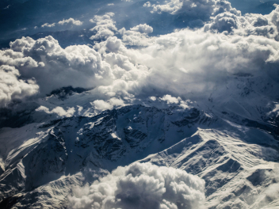
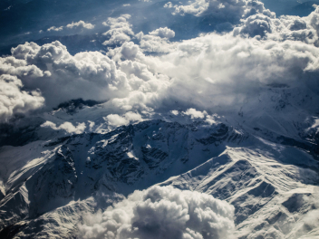

Curonian spit
url
park-kosa.ru
Here, in the middle of forests and sand dunes, you can see two water horizons - the calm Curonian Lagoon on one side and the rippling waves of the Baltic Sea on the other. A unique natural area on the edge of the Russian enclave.
The Kaliningrad region does not end there. For a traveler and researcher, there is the westernmost point of Russia, the Baltic Spit, and the German heritage of a scattering of small seaside towns in the same neighborhood. The atmosphere of these places eliminates the fuss, dipping into the tranquility of nature and the smell of steel, cool sea.